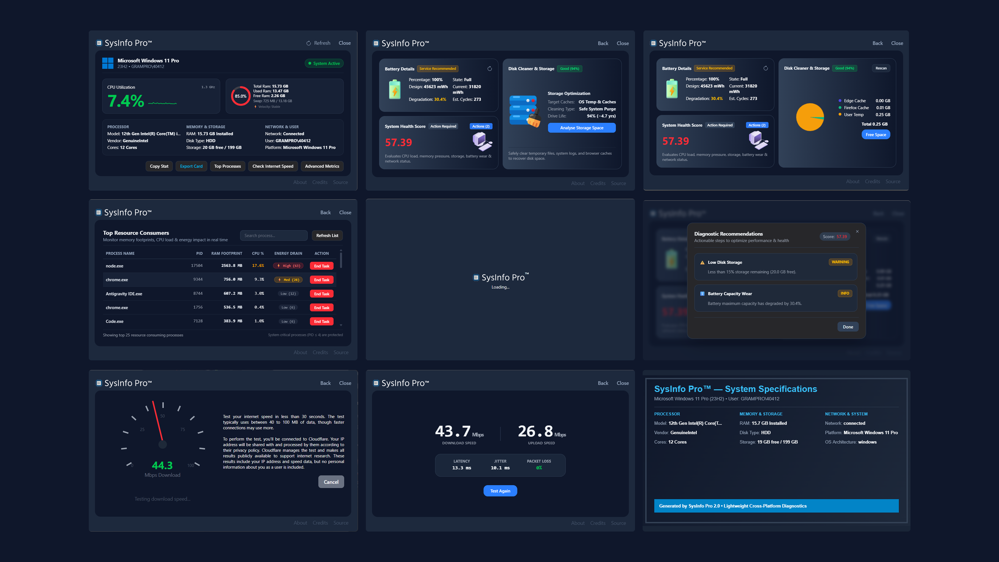

An ultra-clean, information-dense desktop utility built for developers, power users, and PC enthusiasts. Real-time RAM velocity forecasting, Google-accuracy speed testing, and 1-click disk purging.

No bloatware. No registration. Just instant, authoritative hardware metrics.
Continuously tracks RAM consumption velocity (MB/s) and predicts Out-Of-Memory slowdowns before your OS freezes.
Parallel 4-stream CDN speed engine measuring download/upload Mbps, ping latency, jitter, and packet loss with M-Lab precision.
Generates a high-res PNG hardware specification badge saved directly to your Downloads folder for sharing on GitHub & social media.
Scans and safely eliminates temporary system files, log dumps, and browser caches with real-time freed storage feedback.
Deep battery degradation %, design vs current mWh capacity, cycle count estimates, and operational health badges for laptops.
Calculates an Energy Impact score (1-100) per running process to immediately spot background tasks draining your battery.
Why Windows SmartScreen or Chrome may display a warning, and how to safely run SysInfo Pro.
Understanding Code Signing Certificates for Independent Open-Source Software
Operating systems like Windows Defender SmartScreen and browsers like Google Chrome require software binaries to be signed with an EV (Extended Validation) Code Signing Certificate. These corporate certificates cost $400 to $600+ every year from Certificate Authorities (DigiCert / Sectigo).
As a free, independent open-source utility without commercial funding, subscription fees, or venture backing, we invest our resources directly into building clean code rather than paying annual certificate authority fees. Because SysInfo Pro is unsigned, browsers and Windows issue automated "Unknown Publisher" or "Uncommon Download" prompts.
.exe without modifying system registry.
Click Download Free for Windows to save the official sysinfopro.exe binary to your Downloads folder.
If Chrome flags "not commonly downloaded", click the three dots (...) next to the download → Select Keep → Keep anyway.
If Windows shows "Windows protected your PC", click More info → Click Run anyway to launch.